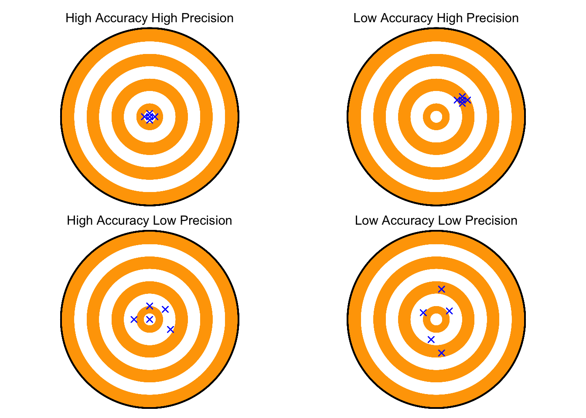

library(tidyverse)
sbr <- tribble(
~leaf, ~R1, ~R2, ~R3, ~R4,
1L, 0.6, 0.6, 0.7, 0.6,
2L, 2, 0.7, 5, 1,
3L, 5, 5, 8, 5,
4L, 2, 4, 6, 2,
5L, 6, 14, 10, 7,
6L, 5, 6, 10, 5,
7L, 10, 18, 12.5, 12,
8L, 15, 30, 22, 10,
9L, 7, 2, 12, 8,
10L, 6, 9, 11.5, 8,
11L, 7, 7, 20, 9,
12L, 6, 23, 22, 14,
13L, 10, 35, 18.5, 20,
14L, 19, 10, 9, 10,
15L, 15, 20, 19, 20,
16L, 17, 30, 18, 13,
17L, 19, 53, 33, 38,
18L, 17, 6.8, 15, 9,
19L, 15, 20, 18, 16,
20L, 18, 22, 24, 15
)3 Reliability and accuracy
This is a work in progress that is currently undergoing heavy technical editing and copy-editing
3.1 Terminology
Disease severity, mainly when expressed in percent area diseased assessed visually, is acknowledged as a more difficult and less time- and cost-effective plant disease variable to obtain. However, errors may occur even when assessing a more objective measure such as incidence. This is the case when an incorrect assignment or confusion of symptoms occur. In either case, the quality of the assessment of any disease variable is very important and should be gauged in the studies. Several terms can be used when evaluating the quality of disease assessments, including reliability, precision, accuracy or agreement.
Reliability: The extent to which the same estimates or measurements of diseased specimens obtained under different conditions yield similar results. There are two types. The inter-rater reliability (or reproducibility) is a measure of consistency of disease assessment across the same specimens between raters or devices. The intra-rater reliability (or repeatability) measures consistency by the same rater or instrument on the same specimens (e.g. two assessments in time by the same rater).
Precision: A statistical term to express the measure of variability of the estimates or measurements of disease on the same specimens obtained by different raters (or instruments). However, reliable or precise estimates (or measurements) are not necessarily close to an actual value, but precision is a component of accuracy or agreement.
Accuracy or agreement: These two terms can be treated as synonymous in plant pathological research. They refer to the closeness (or concordance) of an estimate or measurement to the actual severity value for a specimen on the same scale. Actual values may be obtained using various methods, against which estimates or measurements using an experimental assessment method are compared.
3.2 Statistical summaries
A formal assessment of the quality of estimates or measures is made using statistical summaries of the data expressed as indices that represent reliability, precision and accuracy. These indices can further be used to test hypothesis such as if one or another method is superior than the other. The indices or the tests vary according to the nature of the variable, whether continuous, binary or categorical.
3.2.1 Inter-rater reliability
To calculate measures of inter-rater reliability (or reproducibility) we will work with a fraction of a larger dataset used in a published study. There, the authors tested the effect of standard area diagrams (SADs) on the reliability and accuracy of visual estimates of severity of soybean rust.
The selected dataset consists of five columns with 20 rows. The first is the leaf number and the others correspond to assessments of percent soybean rust severity by four raters (R1 to R4). Each row correspond to one symptomatic leaf. Let’s assign the tibble to a dataframe called sbr (an acronym for soybean rust). Note that the variable is continuous.
Let’s explore the data using various approaches. First, we can visualize how the individual estimates by the raters differ for a same leaf.
# set the global theme
theme_set(theme_light())
# transform from wide to long format
sbr2 <- sbr |>
pivot_longer(2:5, names_to = "rater",
values_to = "estimate")
# create the plot
sbr2 |>
ggplot(aes(leaf, estimate, color = rater,
group = leaf))+
geom_line(color = "black")+
geom_point(size = 2)+
labs(y = "Severity estimate (%)",
x = "Leaf number")
Alternatively, we can visualize the distribution of the estimates by rater using boxplots.
sbr2 |>
ggplot(aes(rater, estimate))+
geom_boxplot(outlier.colour = NA, width =0.5)+
geom_jitter(width = 0.1,shape = 1, size =2)+
labs(y = "Severity estimate (%)",
x = "Rater")
Another interesting visualization is the correlation matrix of the estimates between all possible pair of raters. The ggpairs function of the GGally package is handy for this task.
library(GGally)
theme_set(theme_light())
# create a new dataframe with only raters
raters <- sbr |>
select(2:5)
ggpairs(raters)
3.2.1.1 Coefficient of determination
We noticed earlier that the correlation coefficients varied across all pairs of rater. Sometimes, the means of squared Pearson’s R values (R2), or the coefficient of determination is used as a measure of inter-rater reliability. We can further examine the pair-wise correlations in more details using the correlation function of the performance package.
library(correlation)
raters_cor <- correlation(raters)
raters_cor# Correlation Matrix (pearson-method)
Parameter1 | Parameter2 | r | 95% CI | t(18) | p
-----------------------------------------------------------------
R1 | R2 | 0.63 | [0.26, 0.84] | 3.46 | 0.003**
R1 | R3 | 0.68 | [0.34, 0.86] | 3.96 | 0.003**
R1 | R4 | 0.68 | [0.33, 0.86] | 3.89 | 0.003**
R2 | R3 | 0.84 | [0.64, 0.94] | 6.60 | < .001***
R2 | R4 | 0.89 | [0.74, 0.96] | 8.38 | < .001***
R3 | R4 | 0.86 | [0.68, 0.94] | 7.20 | < .001***
p-value adjustment method: Holm (1979)
Observations: 20The means of coefficient of determination can be easily obtained as follows.
# All pairwise R2
raters_cor$r^2[1] 0.4000610 0.4659340 0.4565685 0.7078417 0.7960531 0.7422633# means of R2
mean(raters_cor$r^2) [1] 0.59478693.2.1.2 Intraclass Correlation Coefficient
A common statistic to report in reliability studies is the Intraclass Correlation Coefficient (ICC). There are several formulations for the ICC whose choice depend on the particular experimental design. Following the convention of the seminal work by Shrout and Fleiss (1979), there are three main ICCs:
One-way random effects model, ICC(1,1): in our context, each leaf is rated by different raters who are considered as sampled from a larger pool of raters (random effects)
Two-way random effects model, ICC(2,1): both raters and leaves are viewed as random effects
Two-way mixed model, ICC(3,1): raters are considered as fixed effects and leaves are considered as random.
Additionally, the ICC may depend on whether the ratings are an average or not of several ratings. When an average is considered, these are called ICC(1,k), ICC(2,k) and ICC(3,k).
The ICC can be computed using the ICC() or the icc() functions of the psych or irr packages, respectively. They both provide the coefficient, F value, and the upper and lower bounds of the 95% confidence interval.
library(psych)
ICC(raters)Call: ICC(x = raters)
Intraclass correlation coefficients
type ICC F df1 df2 p lower bound upper bound
Single_raters_absolute ICC1 0.64 8.1 19 60 1.8e-10 0.47 0.79
Single_random_raters ICC2 0.65 10.0 19 57 6.1e-12 0.47 0.80
Single_fixed_raters ICC3 0.69 10.0 19 57 6.1e-12 0.54 0.82
Average_raters_absolute ICC1k 0.88 8.1 19 60 1.8e-10 0.78 0.94
Average_random_raters ICC2k 0.88 10.0 19 57 6.1e-12 0.78 0.94
Average_fixed_raters ICC3k 0.90 10.0 19 57 6.1e-12 0.82 0.95
Number of subjects = 20 Number of Judges = 4
See the help file for a discussion of the other 4 McGraw and Wong estimates,The output of interest is a dataframe with the results of all distinct ICCs. We note that the ICC1 and ICC2 gave very close results. Now, let’s obtain the various ICCs using the irr package. Differently from the the ICC() function, this one requires further specification of the model to use.
library(irr)
icc(raters, "oneway") Single Score Intraclass Correlation
Model: oneway
Type : consistency
Subjects = 20
Raters = 4
ICC(1) = 0.641
F-Test, H0: r0 = 0 ; H1: r0 > 0
F(19,60) = 8.13 , p = 1.8e-10
95%-Confidence Interval for ICC Population Values:
0.44 < ICC < 0.813# The one used in the SBR paper
icc(raters, "twoway") Single Score Intraclass Correlation
Model: twoway
Type : consistency
Subjects = 20
Raters = 4
ICC(C,1) = 0.692
F-Test, H0: r0 = 0 ; H1: r0 > 0
F(19,57) = 9.98 , p = 6.08e-12
95%-Confidence Interval for ICC Population Values:
0.503 < ICC < 0.8453.2.1.3 Overall Concordance Correlation Coefficient
Another useful index is the Overall Concordance Correlation Coefficient (OCCC) for evaluating agreement among multiple observers. It was proposed by Barnhart et al. (2002) based on the original index proposed by Lin (1989), earlier defined in the context of two fixed observers. In the paper, the authors introduced the OCCC in terms of the interobserver variability for assessing agreement among multiple fixed observers. As outcome, and similar to the original CCC, the approach addresses the precision and accuracy indices as components of the OCCC. The epi.occc function of the epiR packge does the job but it does compute a confidence interval.
library(epiR)
epi.occc(raters, na.rm = FALSE, pairs = TRUE)
Overall CCC 0.6372
Overall precision 0.7843
Overall accuracy 0.81253.2.2 Intrarater reliability
As defined, the intrarater reliability is also known as repeatability, because it measures consistency by the same rater at repeated assessments (e.g. different times) on the same sample. In some studies, we may be interested in testing whether a new method increases repeatability of assessments by a single rater compared with another one. The same indices used for assessing reproducibility (interrater) can be used to assess repeatability, and these are reported at the rater level.
3.2.3 Precision
When assessing precision, one measures the variability of the estimates (or measurements) of disease on the same sampling units obtained by different raters (or instruments). A very high precision does not mean that the estimates are closer to the actual value (which is given by measures of bias). However, precision is a component of overall accuracy, or agreement. It is given by the Pearson’s correlation coefficient.
Different from reliability, that requires only the estimates or measures by the raters, now we need a reference (gold standard) value to compare the estimates to. These can be an accurate rater or measures by an instrument. Let’s get back to the soybean rust severity estimation dataset and add a column for the (assumed) actual values of severity on each leaf. In that work, the actual severity values were obtained using image analysis.
sbr <- tibble::tribble(
~leaf, ~actual, ~R1, ~R2, ~R3, ~R4,
1L, 0.25, 0.6, 0.6, 0.7, 0.6,
2L, 2.5, 2, 0.7, 5, 1,
3L, 7.24, 5, 5, 8, 5,
4L, 7.31, 2, 4, 6, 2,
5L, 9.07, 6, 14, 10, 7,
6L, 11.6, 5, 6, 10, 5,
7L, 12.46, 10, 18, 12.5, 12,
8L, 13.1, 15, 30, 22, 10,
9L, 14.61, 7, 2, 12, 8,
10L, 16.06, 6, 9, 11.5, 8,
11L, 16.7, 7, 7, 20, 9,
12L, 19.5, 6, 23, 22, 14,
13L, 20.75, 10, 35, 18.5, 20,
14L, 23.56, 19, 10, 9, 10,
15L, 23.77, 15, 20, 19, 20,
16L, 24.45, 17, 30, 18, 13,
17L, 25.78, 19, 53, 33, 38,
18L, 26.03, 17, 6.8, 15, 9,
19L, 26.42, 15, 20, 18, 16,
20L, 28.89, 18, 22, 24, 15
)We can explore visually via scatter plots for the relationships between the actual value and the estimates by each rater. To facilitate, we need the data in the long format.
sbr2 <- sbr |>
pivot_longer(3:6, names_to = "rater",
values_to = "estimate")
sbr2 |>
ggplot(aes(actual, estimate))+
geom_point(size = 3, alpha = 0.7)+
facet_wrap(~rater)+
ylim(0,45)+
xlim(0,45)+
geom_abline(intercept = 0, slope =1)+
labs(x = "Actual severity (%)",
y = "Estimate severity (%)")
The Pearson’s r for the relationship, or the precision of the estimates by each rater, can be obtained using the correlation function of the correlation package.
precision <- sbr2 |>
select(-leaf) |>
group_by(rater) |>
correlation()
precision# Correlation Matrix (pearson-method)
Group | Parameter1 | Parameter2 | r | 95% CI | t(18) | p
-------------------------------------------------------------------------
R1 | actual | estimate | 0.87 | [0.70, 0.95] | 7.58 | < .001***
R2 | actual | estimate | 0.58 | [0.19, 0.82] | 3.06 | 0.007**
R3 | actual | estimate | 0.75 | [0.47, 0.90] | 4.86 | < .001***
R4 | actual | estimate | 0.71 | [0.39, 0.88] | 4.29 | < .001***
p-value adjustment method: Holm (1979)
Observations: 20mean(precision$r)[1] 0.7302795mean(precision$CI_low)[1] 0.4373825mean(precision$CI_high)[1] 0.88472613.2.4 Accuracy
3.2.4.1 Absolute errors
sbr2 |>
ggplot(aes(actual, estimate-actual))+
geom_point(size = 3, alpha = 0.7)+
facet_wrap(~rater)+
geom_hline(yintercept = 0)+
labs(x = "Actual severity (%)",
y = "Error (Estimate - Actual)")
3.2.4.2 Concordance correlation coefficient
Lin’s (1989, 2000) proposed the concordance correlation coefficient (CCC) for agreement on a continuous measure obtained by two methods. The CCC combines measures of both precision and accuracy to determine how far the observed data deviate from the line of perfect concordance. Lin’s CCC increases in value as a function of the nearness of the data’s reduced major axis to the line of perfect concordance (the accuracy of the data) and of the tightness of the data about its reduced major axis (the precision of the data).
The epi.ccc function of the epiR package allows to obtain the Lin’s CCC statistics. Let’s filter only rater 2 and calculate the CCC statistics for this rater.
library(epiR)
# Only rater 2
sbr3 <- sbr2 |> filter(rater == "R2")
ccc <- epi.ccc(sbr3$actual, sbr3$estimate)
# Concordance coefficient
rho <- ccc$rho.c[,1]
rho[1] 0.5230656# Bias coefficient
Cb <- ccc$C.b
Cb[1] 0.8948494# Precision
r <- ccc$C.b*ccc$rho.c[,1]
r[1] 0.4680649# Scale-shift
ss <- ccc$s.shift
ss[1] 1.609118# Location-shift
ls <- ccc$l.shift
ls[1] -0.06660692Metrics <- c("Agreement", "Bias coefficient", "Precision", "scale-shift", "location-shift")
Value <- c(rho, Cb, r, ss, ls)
res <- data.frame(Metrics, Value)
res Metrics Value
1 Agreement 0.52306557
2 Bias coefficient 0.89484944
3 Precision 0.46806493
4 scale-shift 1.60911784
5 location-shift -0.06660692